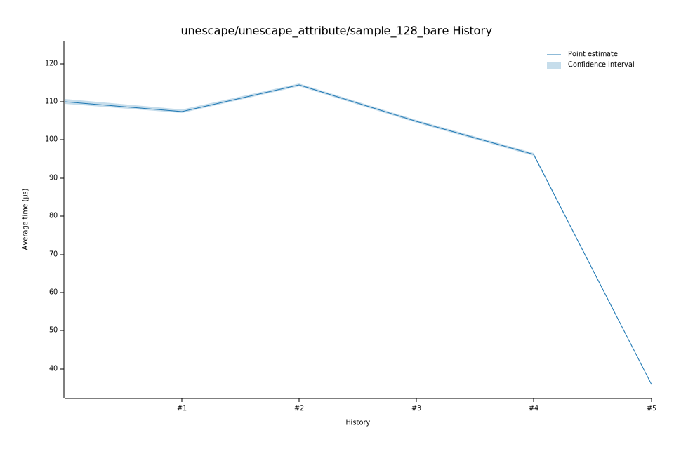

# 22023-01-21T06:06:50-08:00
|
Lower Bound |
Estimate |
Upper Bound |
| Value: |
114.07µs |
114.38µs |
114.79µs |
| Throughput: |
141.26MiB/s |
140.87MiB/s |
140.37MiB/s |
| Change in Value: |
+5.7331% |
+6.6126% |
+7.5913% |
| Change in Throughput: |
-5.4223% |
-6.2024% |
-7.0557% |
No change in performance detected.
# 12023-01-21T06:02:22-08:00
|
Lower Bound |
Estimate |
Upper Bound |
| Value: |
107.11µs |
107.49µs |
107.90µs |
| Throughput: |
150.43MiB/s |
149.91MiB/s |
149.33MiB/s |
# 02023-01-14T18:29:40-08:00
|
Lower Bound |
Estimate |
Upper Bound |
| Value: |
109.52µs |
110.06µs |
110.71µs |
| Throughput: |
147.12MiB/s |
146.40MiB/s |
145.54MiB/s |